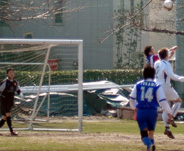

|
YC&AC, Sat 4th March. Although the KGFC captain may now want to retract certain comments made at last years award ceremonies, concerning more silverware being lifted by him this year, KGFC have certainly impressed during their first season in division one. And though that stay seems set to end rather sooner than later with the club languishing in the lower reaches of the league table, their ‘unique’ style of play will surely see them back again sometime.
 On Saturday at YCAC, Sala ran the whole gambit of emotions, from indifference to apathy, as KGFC got up to their usual tricks and partially succeeded in riling Sala’s not insignificant population of hotheads. On Saturday at YCAC, Sala ran the whole gambit of emotions, from indifference to apathy, as KGFC got up to their usual tricks and partially succeeded in riling Sala’s not insignificant population of hotheads.
It was also evident that the official in charge was of the belief that as long as a team doesn’t verbally complain, then they are playing fair, which is certainly not always the case. But these are issues aside and pub team managers across the globe shall forever go to bed cursing referees and opponents with equal measure regardless of result or circumstance.
Sala kicked off in the knowledge that a win would keep them in with an outside chance of repeating their two previous third place finishes in TML seasons 1 and 2.
With the pitch at YCAC part Lawrence of Arabia and part Platoon, Sala opted for a direct approach, and it seemed to pay off.
After a quiet first ten minutes, a long ball into the box saw Toby outmuscle his marker in the air, (the ball striking both their heads and going straight up) the defender appeared to lose track of it completely, but Toby kept his eye on it and when it came down he rifled it into the top corner from ten yards. 1v0
KGFC thought themselves unlucky not to be awarded a penalty minutes later when Guido and their striker went head to head in the box, but let it suffice to say that although the Oscars were on that weekend, the KGFC player who hit the deck had surely left his entry a little late.
Mere minutes after that though, a virtual replay of the incident saw a penalty given for pulling. To be perfectly honest it appeared to be as close to a dictionary definition of ‘six and half a dozen’ as possible. And perhaps it should be pointed out for clarity that these two amounts are the same.
But Sala expect to concede at least one penalty per TML game and were not thrown too much by the equaliser, which was expertly placed in the corner. 1v1.
As the half wore on, Sala carved out a succession of chances, but failed to take advantage of their territorial domination.
Lenny’s strong run and shot found the side netting, Clarkey’s header bounced into Charles’ thigh forcing the keeper to make a superb stop, and finally Charles’ chip after a right stramash, struck the bar.
With the sides level at halftime, teenage sensation Yasuhiro was brought on for Charles to add some zing to the attack.
Sala once again took control of the game in the second half, but always seemed to run out of ideas around the edge of the box. For the first twenty minutes of the half though they totally dominated, KGFC didn’t come close to the Sala goal.
Tempers started to boil over as unseen KGFC niggling began to wind up even the calmest of Sala’s players. Toby was booked for complaining and Guido was warned about his tackling, which seemed more than a little unfair under the circumstances.
But out of the storm of unrest, that most rare of situations occurred, Sala were awarded a penalty, their first in all competitions this season.
The referee finally penalised the KGFC back line for repetitive pushing and use of the elbow whilst jumping for the ball, Toby was clearly whacked as he jumped near the penalty spot and Clarkey, as ever, side footed home what should have been the winner.
Alas the story never has a simple happy ending for Sala, and some five minutes later KGFC pulled level. They began to dominate the game in the middle of the pitch, and every time Sala pushed up, KGFC got forward with numbers on the break. On one such occasion two shots were blocked on the edge of the box by Sala’s defence, but the third one rocketed into the bottom right corner, and it was back to the drawing board at 2v2.
Sala poured forward again, Lenny, Brian, Shigeru and Yasuhiro ran indefatigably to try and set up a winner, whilst at the back, many crucial tackles were won as gaps began to appear and legs got tired. Sid also pulled off a couple of important saves to play his part, pushing a fierce drive over his crossbar and also clearing well from several dangerous corners with some continental style punching.
At the other end Andres shot wide from the edge of the box, and Yasuhiro had the ‘crowd’ on their feet twice with a near post shot and a flicked header both of which looked like they were going in. In fact Clarkey almost got an unheard of second of the game when he headed over from a Brookey free kick.
Brian Gallagher was the next recipient of the elbow, this time taking a very nasty one from a player who had already gotten away with it on several occasions, he required treatment and an ice pack after the game.
The winner was deservedly scored by captain Guido, who had suffered as much as anyone from niggles and frustration, and was, well, rather happy about the whole affair, we shall say.
His dink over the keeper was bouncing happily towards the net, when somehow a KGFC defender teleported himself into its path and hooked it clear. It dropped to Lenny who fired it back in, only to watch as a KGFC defender clearly fouled Guido again. The ball escaped out right this time and Andres hooked it back in to Guido who, by this time back on his knees, dived to head into the corner. 3v2.
Guido then managed to make a match saving tackle at the other end to stop a KGFC breakaway right at the death. But justice was done, and now Sala can look forward to a crunch match against the Swiss next week.
Match reporter: Roddy Charles
|